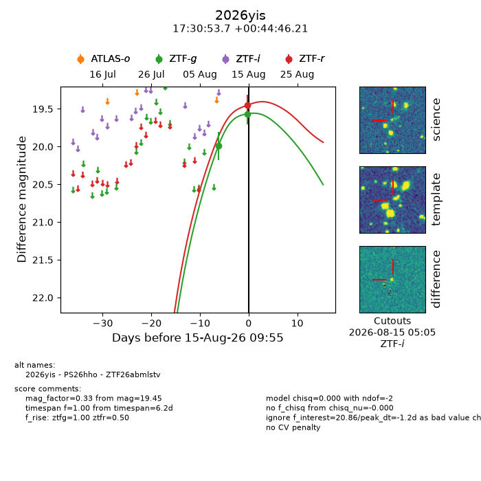
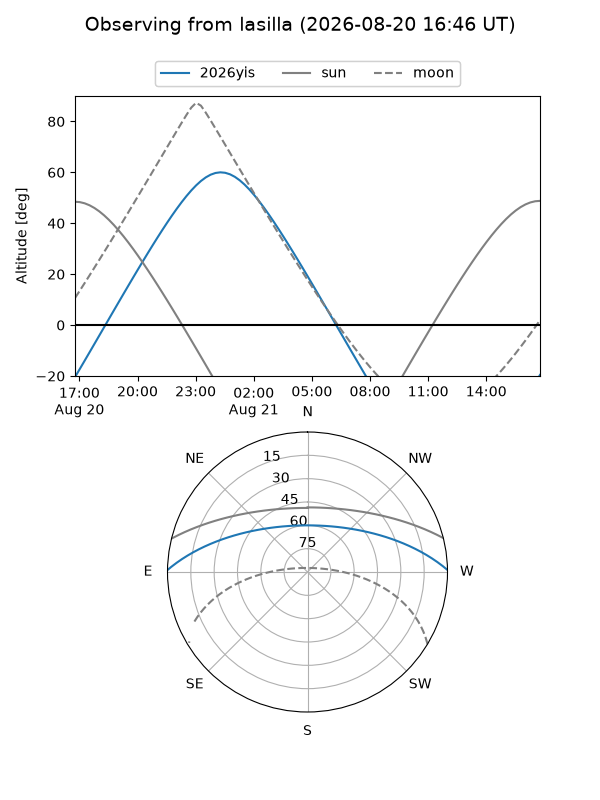
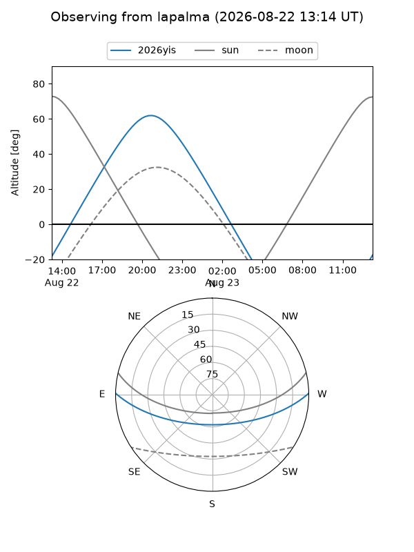
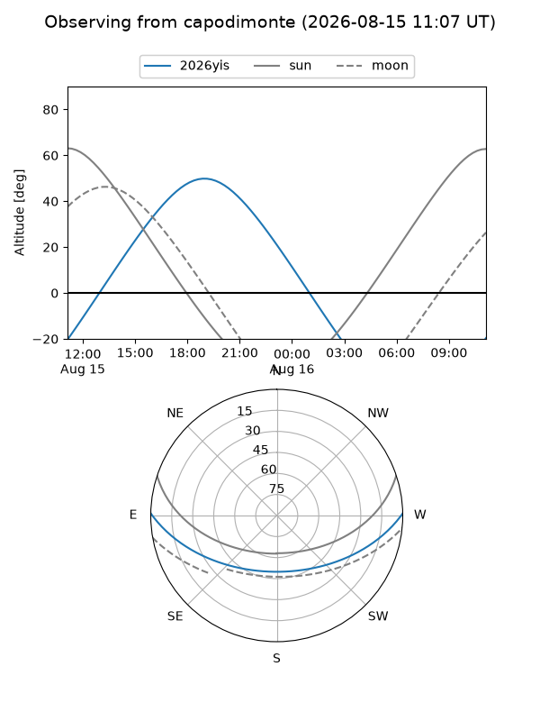
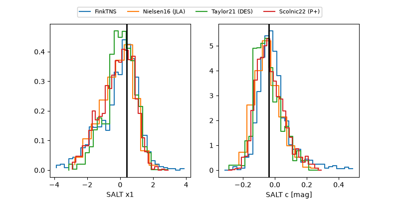

2026yis
Target 2026yis at 2026-08-15 09:58
Aliases and brokers:
FINK-ZTF: ztf.fink-portal.org/ZTF26abmlstv
Lasair-ZTF: lasair-ztf.lsst.ac.uk/objects/ZTF26abmlstv
ALeRCE-ZTF: alerce.online/object/ZTF26abmlstv
YSE-PZ: ziggy.ucolick.org/yse/transient_detail/2026yis
TNS name: wis-tns.org/object/2026yis
Direct TNS query: direct search
alt names
ZTF26abmlstv (ztf,fink_ztf)
2026yis (tns,yse)
PS26hho (panstarrs)
Coordinates:
equatorial (ra, dec) = 262.7239,+0.74617
equatorial (HMS+DMS) = 17:30:53.73,+00:44:46.21
galactic (l, b) = (24.1300,+18.19697)
Flags:
TNS type: nan
peak dt: -1.2
Photometry:
last ztfg=19.56, ztfr=19.45
2 ztfg, 1 ztfr detections
Lightcurve

Visibility



Additional plots
